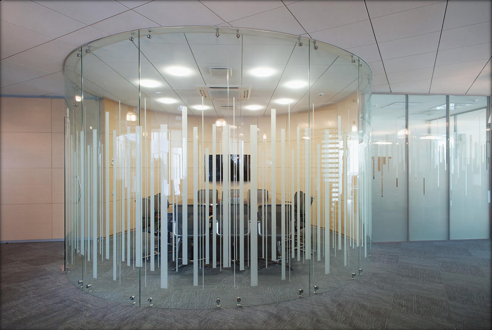

Дизайнерские интерьерные перегородки
Криволинейные стеклянные конструкции, которые делают пространство выразительным и узнаваемым. Гнутые и моллированные стёкла — наш новый продукт для дизайна.
Криволинейные стеклянные конструкции, которые делают пространство выразительным и узнаваемым. Гнутые и моллированные стёкла — наш новый продукт для дизайна.

Плавные изгибы вместо прямых углов — для радиусных переговорных, ресепшен-зон, витрин и колонн.

Бесшовный угол из единого стекла — аккуратное и эффектное решение для замкнутых стеклянных объёмов.

Реализуем криволинейные конструкции по вашему дизайн-проекту. Обсудим радиусы, тип стекла и крепления.
Обсудить проект